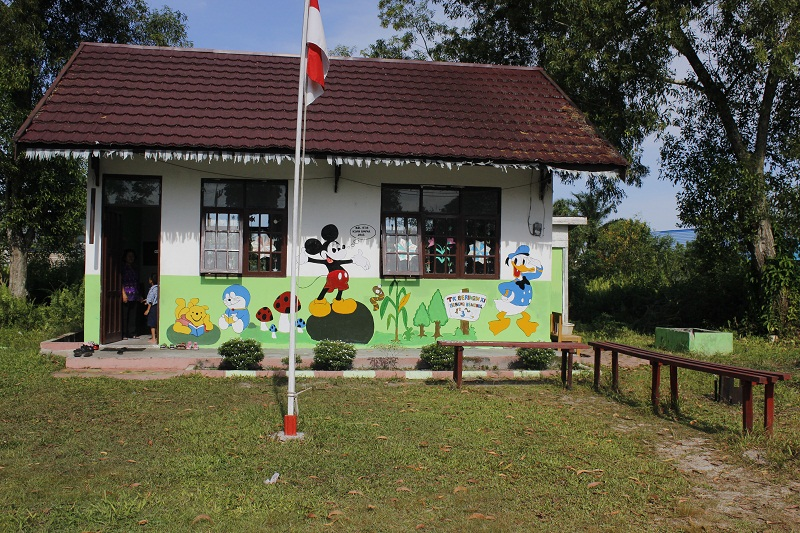
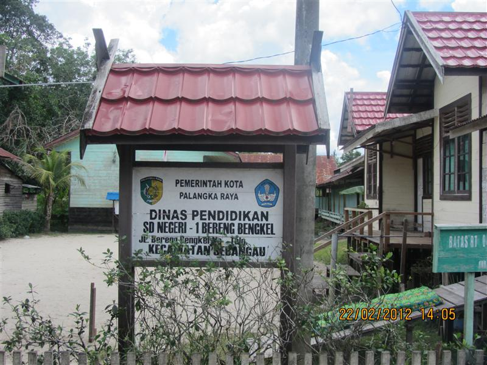
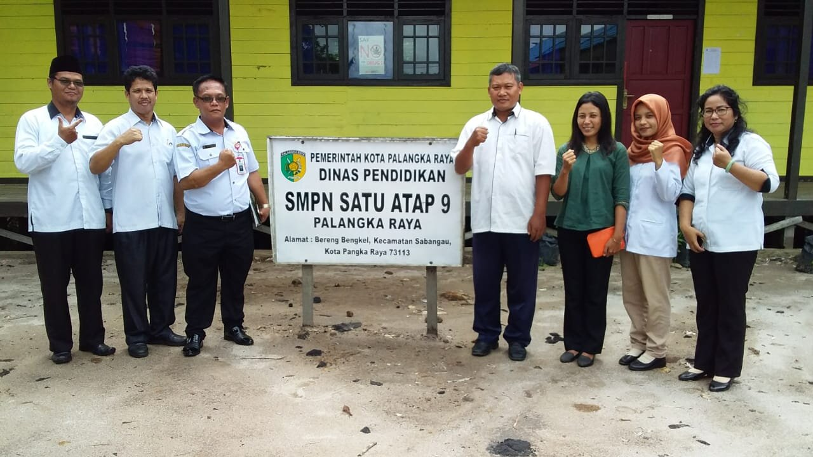

TK · BERENG BENGKELBeranda / Pendidikan
Pendidikan
Informasi pendidikan
Direktori sekolah di Bereng Bengkel. Pilih sekolah untuk melihat identitas, informasi, galeri foto, dan lokasi.
Direktori sekolah
Kenali sekolah di lingkungan Bereng Bengkel
Setiap sekolah memiliki halaman tersendiri agar informasi lebih lengkap dan mudah ditemukan.

SD · BERENG BENGKEL
SMP · BERENG BENGKEL
Catatan: data identitas awal diambil dari berkas website yang
diunggah. Detail seperti akreditasi, jumlah peserta didik, guru, dan
fasilitas perlu diperbarui berdasarkan data resmi sekolah yang
terbaru.